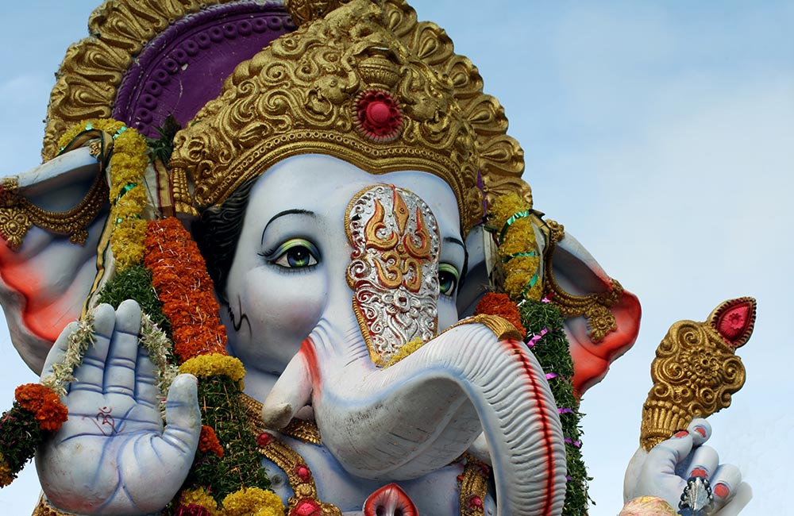

.jpg)

The representation of Indian Festival is:
.jpg)
They say we should celebrate life, not just festivals. Well, in a country like India, life is synonymous with festivals because there are more fiestas than you can count, and each of these mirrors our culture and traditions. Breaking the humdrum of daily routine, these festivals bring with them a wave of excitement and happiness. Interestingly, almost every big and small occasion in India calls for a celebration. Be it the arrival of spring, harvesting of crops or something else, you will never run of out reasons and seasons to celebrate. Experiencing the festive spirit of the country is akin to celebrating life, speckled with an ample dose of colors, music, dance, folk songs, food, and friends, all rolled into a wholesome package offering absolute gratification.
Among all festivals of India, Ganesh Chaturthi or Vinayaka Chaturthi holds a special significance for Hindus. The festival commemorates the birth of the much-loved Hindu deity, Lord Ganesha. Colorful festivities spanning over ten days mark the celebrations. It starts with the installation of artistically crafted Ganesha idols in homes and public mandaps. People worship the deity with much fervor and gaiety. On the tenth day, the idol is immersed in water, which marks the end of the festivities. Ganesh Chaturthi is celebrated all over India, especially in the states of Maharashtra